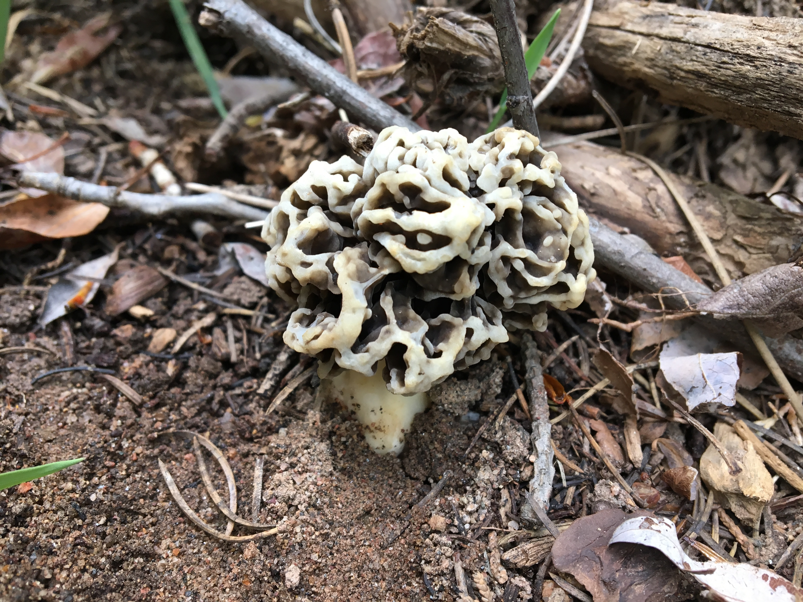
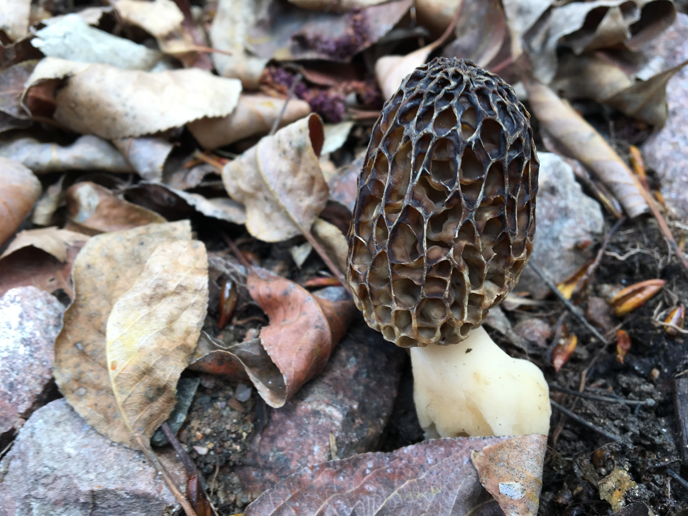
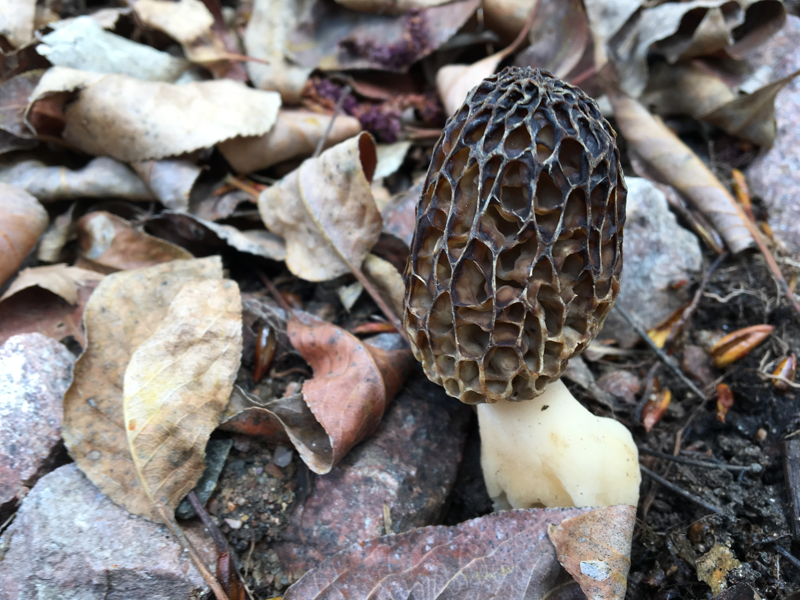
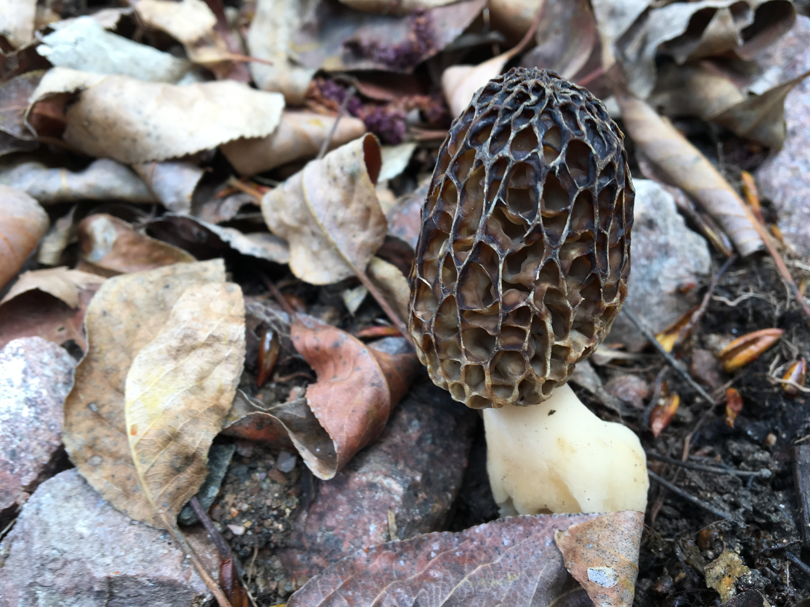

I am a husband, a father of two, and an engineer living and working in Kansas City. My field of work is computer science, and I enjoy the application of technology to solve problems.
For fun I like to hunt, photograph, and study fungi. I enjoy the confluence of technical knowledge and organic systems after working with computers all day at my job. I also find the physical fitness aspect refreshing. Checkout one website I use a lot called mushroomobserver where you can post photos of any mushroom you find and get an identification with a confidence interval.
I hope you enjoy some photos of morels I found in New Mexico, some of which are the first photos of these species in that state.

 


